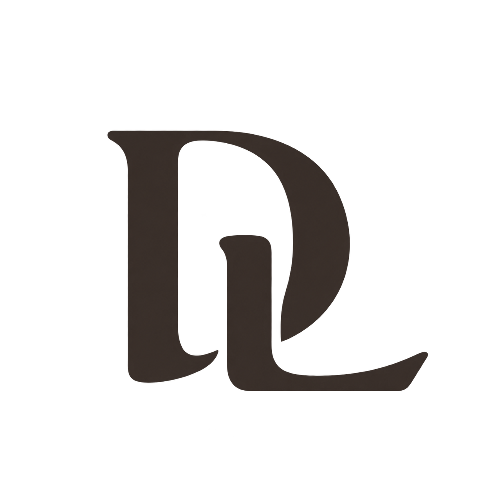
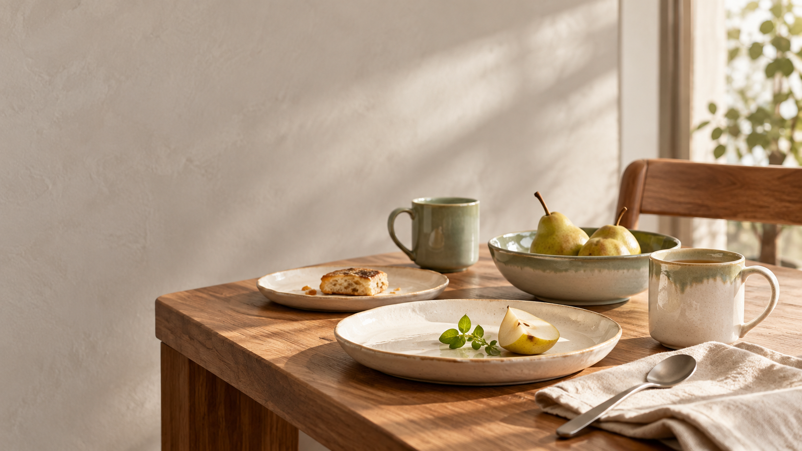
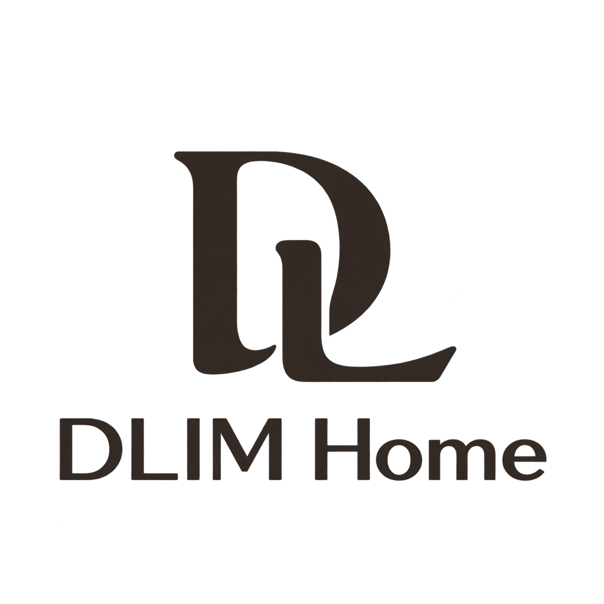
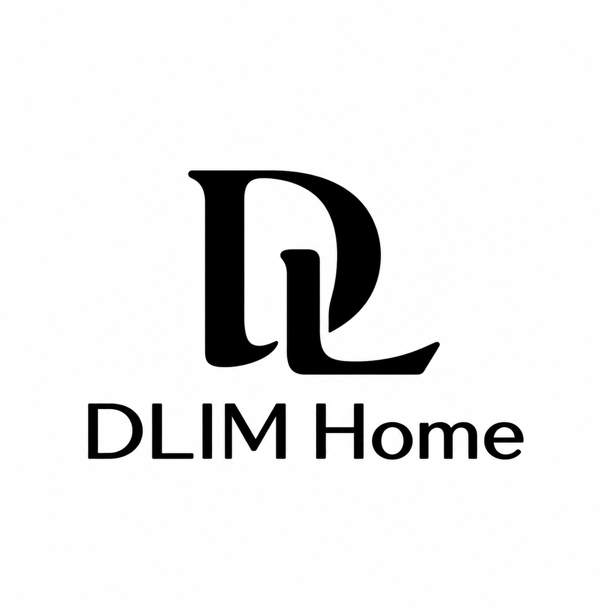
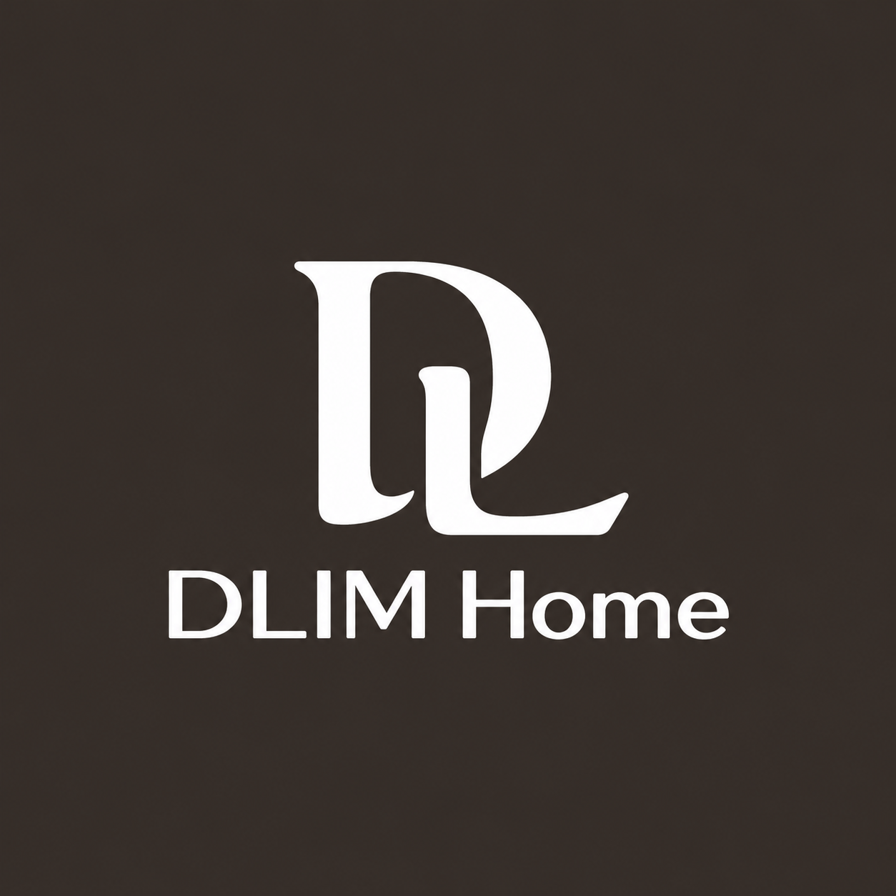
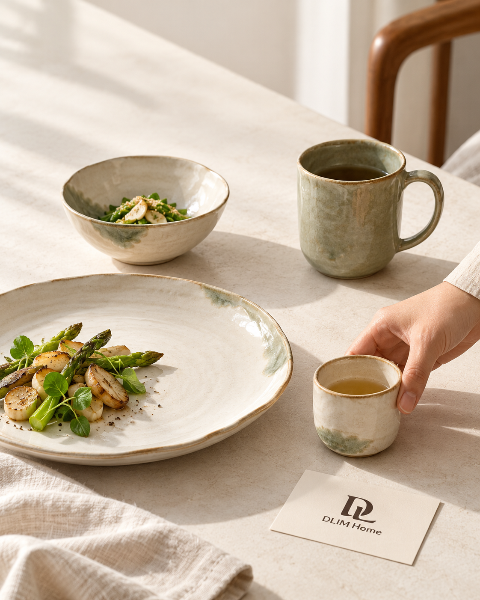

1.1
品牌名称
品牌名称固定为 DLIM Home。DLIM 为自造词，不延伸未经确认的历史、缩写含义或中文译名。
Use DLIM Home exactly. Do not invent an origin story or Chinese name.

A MAKER’S SIGNATURE / 器物署名
The warmth of craft.
The rhythm of home.
DLIM Home 品牌视觉手册
手作餐具 · 家居陶瓷 · 日常生活

EVERYDAY OBJECTS, INDIVIDUAL CHARACTER.一套围绕日常器物的视觉语言。
A visual language built around the objects we live with.
Brand Overview
从每天使用的器物，建立真实的品牌。Build the brand through objects used every day.
OUR POINT OF VIEW / 品牌主张建议
让手作的温度，
进入每天的生活。
The warmth of craft.
A place in everyday life.
品牌名称固定为 DLIM Home。DLIM 为自造词，不延伸未经确认的历史、缩写含义或中文译名。
Use DLIM Home exactly. Do not invent an origin story or Chinese name.
以日用盘碗、马克杯与茶器为核心的手作陶瓷品牌。层叠釉色、细微个体差异与高温烧制构成产品叙事。
Handcrafted everyday tableware, mugs and tea ware, defined by layered glazes and subtle individuality.
面向中国一、二线城市 28–45 岁审美型消费者，兼顾出口。参考价位：杯 RMB 120–180，餐盘 RMB 150–250；不是全线定价表。
For design-conscious urban adults aged 28–45 in China, with export potential. Prices are brief references, not a full catalogue.
使命建议：让有手作温度的器物，成为日常生活的一部分。表达实用与陪伴，不将日用品塑造成收藏门槛。
Proposed mission: bring the warmth of craft into everyday living.
愿景建议：成为人们愿意长期使用、逐件添置的日常陶瓷品牌。避免未经证实的行业领先表述。
Proposed vision: become a trusted ceramic collection people use and build over time.
价值观建议：尊重材料、真实呈现、耐心制作、关注日用。用釉面细节与使用场景支持这些价值。
Proposed values: respect materials, communicate honestly, make with care and serve daily life.
温润 / Tactile；克制 / Restrained；日常 / Everyday；独特 / Individual。每个传播画面至少体现前两项。
Tactile, restrained, everyday, individual. Lead with warmth and restraint.
温度与精度约 6:4。像一位懂器物、说话平实的朋友；有判断，但不说教。
A 60:40 balance of warmth and precision: informed, calm and approachable.
短句、具体材质、真实动作。可说“釉色在口沿轻轻聚拢”；不用“顶奢”“绝对安全”“千年传承”。售后先回应问题再解释差异。
Use concrete material details and short sentences. In service messages, acknowledge the concern before explaining variation.
Logo Identity System
识别从一枚署名开始。Recognition begins with a maker’s signature.

字母交叠，器物署名。A maker’s signature for everyday ceramics.

黑白 / Black on white
反白 / ReversedA「器物署名」以 D 与 L 的交叠形成制作者印记。开阔弧线与长底脚体现温润，窄缝和清晰字标保留精度。
Maker’s Signature interlocks D and L: generous curves convey warmth; disciplined spacing adds precision.
主标志使用已批准的竖向组合 PNG。形状与字标来自最终资产，不重新输入文字或用字体替代。
Use the approved stacked PNG master. Never retype the wordmark or reconstruct the shape.
独立 DL 印记用于器底、头像与狭小触点。首次品牌介绍、包装正面和主要宣传优先显示完整名称。
Use the monogram for underside stamps and compact surfaces; introduce the brand with the full lockup.
字标保留在已批准主组合内。本版未批准独立字标导出，不从低清展示图截取或重新排字。
The wordmark is approved within the master lockup. A standalone wordmark export is not released in this version.
本阶段不适用：尚未确定中文品牌名，不添加音译名称或以品类文字替代名称。
Not applicable: no Chinese brand name has been established.
完整英文品牌名称为 DLIM Home；保留大写 DLIM 与首字母大写 Home，禁止 DLIM HOME 或 Dlim home。
Preserve exact casing: DLIM Home.
本阶段不适用：无中文品牌名。中英文说明文字可在标志安全空间之外独立排版。
Not applicable to the identity lockup. Bilingual descriptive copy may sit outside the clear space.
本版不新增横版重组。横向栏位使用现有组合等比缩放；空间不足时采用独立印记并在邻近正文介绍品牌。
No new horizontal lockup is released. Scale the approved master proportionally or use the monogram with nearby brand context.
竖向组合以最终透明主标志为准；图形、名称、间距作为整体缩放。
Scale the approved stacked symbol and name together as one asset.
图标用独立印记。提供 64 / 48 / 32 px 的实际显示比较；16 px 仅作极限观察，内部窄缝可能丢失，不宣称可读性已普遍验证。
Inspect the monogram at 64, 48 and 32 px; 16 px is a stress preview, not a guaranteed minimum.
品牌暂无独立 App。这里的方形、反白与圆形示例作为社交头像容器，预留 20% 容器边距。
No standalone app is specified. Square and circular examples define social-avatar treatments with 20% padding.
网站图标使用独立印记，配浅色底以维持对比。浏览器 16 / 32 px 实际效果须在上线时复核，PNG 源文件已提供。
Use the monogram on a light field for favicon preparation. Review actual browser rendering at launch.
Logo Usage Rules
不改变造型，让每次使用都清楚。Preserve the form. Keep every use clear.
x = H ÷ 4，H 为图形标可见高度。
A proportional rule, not a production dimension.
保留原始曲线与窄缝。
Explain the source; do not redraw it.
小尺寸按当前屏幕真实 CSS 像素显示；16 px 是极限观察，非批准最小值。
Actual CSS-size previews. Physical ceramic marks require proofing.
禁止拉伸 / No stretching
禁止旋转 / No rotation
禁止低对比 / No low contrast
禁止阴影 / No shadows
标准比例由已批准 PNG 的非透明轮廓确定。禁止把正方形画布误当作标志本身的宽高比例。
Preserve the content proportions of the approved raster master, not just its square canvas.
网格解释原有造型，不作为重新绘制的依据。曲线、负形与端点以锁定资产为准，不强行统一圆角。
The grid explains the existing image. It does not authorize geometric reconstruction.
定义 H 为独立 DL 印记的可见高度，x = H/4。完整组合四周至少留 x；临近文字、裁切边与装饰图形不得进入。
Let H be the visible monogram height. Keep at least x = H/4 around the complete lockup.
验证建议：屏幕先以完整组合可见宽度 160 px、独立印记高度 32 px 试用；印刷先以组合宽 30 mm、印记高 12 mm 打样。均为起测值，非已认证最小值。
Starting proof sizes: full lockup 160 px / 30 mm wide; monogram 32 px / 12 mm high. These require testing.
字标与图形保持原资产的相对大小和垂直距离。不单独放大字母、拉近图文或增加描边补偿。
Keep the source symbol-to-wordmark ratio and gap. Do not compensate with strokes or independent resizing.
浅底用墨褐或黑标，深底用已提供反白版。透明墨褐标不置于深绿或纹理密集区域。
Use dark marks on light surfaces and the reversed master on dark surfaces.
标志放在图片的平静留白处，或使用独立瓷白底板。保留安全空间，不跨越高光、器物口沿和复杂釉面。
Use a quiet image area or a solid porcelain-white panel, clear of highlights and busy surfaces.
禁用拉伸、旋转、任意染色、阴影、外框、低对比和拥挤裁切。下方错误示例只用于教育，不作为可下载资产。
Do not stretch, rotate, recolor, shadow, outline or crop the identity. Misuse examples are not deliverable variants.
Color System
瓷白留出呼吸，墨褐建立识别。Porcelain creates space. Ink establishes recognition.
#342F2BRGB 52, 47, 43
CMYK ≈ 0, 10, 17, 80%
#F6F3EDRGB 246, 243, 237
CMYK ≈ 0, 1, 4, 4%
#667362RGB 102, 115, 98
CMYK ≈ 11, 0, 15, 55%
#465344RGB 70, 83, 68
CMYK ≈ 16, 0, 18, 67%
#E6E1D8RGB 230, 225, 216
CMYK ≈ 0, 2, 6, 10%
#746C63RGB 116, 108, 99
CMYK ≈ 0, 7, 15, 55%
#342F2B / #F6F3ED11.94:1
#465344 / #F6F3ED7.35:1
#667362 / #F6F3ED4.52:1
#F6F3ED / #342F2B11.94:1
CMYK 仅为未校色的换算参考；Pantone 尚未指定。
Confirm ink, stock and print profile through physical proofs.
墨褐 Ink Brown #342F2B 承担标志、标题和主要按钮，维持有温度的深色识别。
Ink Brown #342F2B anchors the identity, typography and primary actions.
灰绿 Glaze Green #667362 用于小面积辅助面与图形；深釉绿 #465344 用于浅底链接和需要较强对比的文字。
Use Glaze Green #667362 as support; use Deep Glaze #465344 for stronger text contrast.
强调色采用深釉绿，不再引入金色或高饱和橙。单个画面只设置一个主要强调区域。
Use Deep Glaze as the sole emphasis color. Avoid competing accents.
石灰白 #E6E1D8、暖灰 #746C63 用于分隔与辅助信息；小字优先墨褐或更深的中性灰。
Stone #E6E1D8 and warm gray #746C63 support hierarchy; keep small text sufficiently dark.
瓷白 Porcelain #F6F3ED 为主背景，纯白用于需要明确对照的技术规范面板。
Porcelain #F6F3ED is the primary field; pure white supports technical comparison panels.
成功 #465344、错误 #9C3B32、提示 #75552A。状态必须同时有文字或形状，不仅依赖颜色。
Pair success, error and advisory colors with explicit text or shapes.
HEX/RGB 为数字基准。CMYK 表仅为通用数学换算起点；生产以纸张、ICC 配置和打样校色为准。Pantone 暂未指定，禁止声称已匹配专色。
HEX/RGB govern digital use. CMYK figures are rough conversions; no Pantone match is approved.
典型版面建议：瓷白及浅中性色 70%，墨褐 20%，灰绿 10%。照片自身色彩不按此机械计量。
Aim for 70% light neutrals, 20% ink and 10% glaze green in graphic layouts, excluding photography.
深色版采用墨褐底、瓷白正文、浅石色边线。仅在必要界面应用，不通过整页图片反相实现。
Dark interfaces use Ink Brown, Porcelain text and muted light dividers, never inverted photos.
浅色版为官网与手册默认模式，浅底上的正文使用墨褐，照片保持自然白平衡。
Light mode is the default for the site and manual. Retain natural photographic white balance.
不使用黑金奢侈配色、青花蓝白主题、大面积土黄、霓虹渐变；不要用釉绿在深墨褐上排小字。
Avoid black-and-gold luxury, porcelain-blue motifs, dominant ochre and low-contrast small text.
Typography System
中文有温度，信息有秩序。Warm Chinese typography. Clear information.
CHINESE HEADLINE / 中文标题
日常，自有温度。
LATIN & NUMERALS / 英文与数字
Made for the everyday.
0123456789 · RMB 150 · 280 mL
手作的痕迹，留在每一层釉色里。让器物走进日常，让一餐一饮拥有自己的节奏。
The trace of making lives in every layer of glaze. Objects for meals, moments and the rhythm of everyday life.
护理信息示例：适用方式以对应产品说明为准。 / Follow the verified care instructions for each product.
本页优先使用已安装的思源字体，否则使用系统回退；未嵌入或分发字体文件。
The live specimens use installed fonts with system fallbacks. Font files are not bundled.
中文标题建议思源宋体 Medium，仅用于短标题。正式制作安装授权字体后复核；本页可回退到系统宋体。
Use Source Han Serif Medium for short Chinese headings, with a system-serif fallback in this offline manual.
正文建议思源黑体 Regular，说明与标签使用 Medium。中文正文 16 px 起、1.8 行高。
Use Source Han Sans Regular for body text and Medium for labels; start at 16 px with 1.8 line height.
英文标题与品牌说明采用思源黑体所含拉丁字形或系统无衬线，避免与 Logo 争夺识别。
Use the Latin glyphs of Source Han Sans or a system sans-serif for English headings.
英文正文与中文使用同一无衬线体系，字号 14–16 px，行高 1.6–1.8；不将英文作为极小装饰文字。
Keep English body text readable at 14–16 px and 1.6–1.8 line height.
价格、尺寸和 SKU 使用等宽数字特性；格式示例：RMB 150、280 mL、Ø 210 mm。示例尺寸不是商品数据。
Use tabular numerals for prices and specifications. Sample measurements are not product claims.
黑体回退顺序：思源黑体、苹方、微软雅黑、系统 sans-serif。宋体回退：思源宋体、宋体系统字体、serif。
Use installed Source Han fonts first, then platform Chinese fonts and generic families.
显示标题 64/48 px，章标题 36/30 px，小标题 20 px，正文 16 px，辅助说明 14 px；移动端使用较小档。
Type scale: display 64/48, chapter 36/30, subhead 20, body 16 and notes 14 px.
正文 400，标签 500，重要标题 600。避免全页粗体和模拟斜体；字标不能由这些字体替代。
Use weights 400, 500 and 600 sparingly. These text fonts never replace the logo lettering.
中文正文行高 1.8、英文 1.65、短标题 1.25–1.4。连续中文每行约 24–38 字，避免宽幅长行。
Use generous body leading and moderate line lengths; compact leading is reserved for short headings.
中文为主、英文辅助；英文位于中文下方或相邻次级位置。数字与单位留空格，中文标点使用全角。
Prioritize Chinese, with English directly below or secondary. Separate measurements from units with a space.
禁止手写花体、伪书法、过细长文、横向压缩字形和为凑齐宽度强制拉大字距。
Avoid scripts, faux calligraphy, fragile body weights, compressed text and forced tracking.
Graphic Language System
辅助图形退后，器物与标志向前。Secondary graphics support objects and identity.
A SECONDARY GESTURE / 辅助语言
弧线辅助版式，不复制品牌印记。
An open curve supports the composition.
The logo remains intact.
辅助线从器物轮廓的柔和转折出发，使用单条开口弧线和充足留白。不得把辅助线嵌回 DL 标志。
Use open, gentle arcs as secondary devices; never merge them into the logo.
品牌纹样采用低密度偏移弧线：每个模块只放一条，避免满版连续印记形成伪传统花纹。
Create sparse offset-arc patterns, not dense monogram wallpaper or faux heritage ornaments.
细分隔线、编号与小面积色块承担装饰功能；每个版面最多一种辅助装饰。
Use rules, numbering or small color blocks, with one decorative device per layout.
纯色背景优先；需要纹理时使用真实釉面摄影的局部裁切，并为文字保留实色区域。
Prefer solid backgrounds. Use glaze photography only with a separate readable text area.
辅助弧线基准线宽 1–2 px，采用墨褐或灰绿，模块间距至少为模块高度的一半。比例可随版面调整，Logo 不随之变化。
Secondary arcs use 1–2 px strokes and generous spacing. Their rules do not redefine the logo.
辅助图形放在护理卡背面边缘、章节分隔或社媒底部；包装正面让标志保持唯一视觉焦点。
Place secondary graphics on care-card backs or editorial separators; keep package fronts focused on the logo.
禁止陶轮线描、茶壶插画、叶子有机标识、青花纹饰、仿磨损印章和大量波浪纹。
Avoid pottery-wheel sketches, organic leaf badges, porcelain motifs and distressed seals.
Icon System
每一个小符号，都先回答一个功能。Every small symbol serves a clear function.
功能图标采用简单线性轮廓、圆端点、无渐变。图标表达动作，DL 标志承担品牌识别。
Use simple rounded line icons for actions; reserve the monogram for identity.
24×24 逻辑网格，内容留 2 单位边距；图标在容器内保持视觉居中。
Use a 24-unit grid with a 2-unit internal margin and optical centering.
常规图标 24 px，紧凑信息 20 px；触控容器至少 44×44 px，不能仅扩大可见线条。
Use 24 px icons inside at least 44×44 px touch targets.
24 px 图标建议 1.5–2 px 线宽，同组固定一种；缩放按比例而非混用不同粗细。
Choose one consistent 1.5–2 px stroke weight for each 24 px icon family.
线端圆角，拐角不过度圆润；产品事实图示不能因风格化改变含义。
Use rounded caps without obscuring function or factual meaning.
搜索、菜单、关闭、下载采用通用形状并配可访问名称；本手册优先使用文字按钮，避免含糊图标。
Give search, menu, close and download controls accessible names; text controls are preferred in this manual.
状态图标配“已复制”“待填写”等文字。洗碗机、微波炉等护理符号只在对应 SKU 通过验证后使用。
Status symbols require labels. Appliance-care icons require SKU-specific verification.
禁止装饰 emoji 替代功能图标，禁止未经验证的认证、环保或食品安全图标。
Do not substitute emoji for functional icons or invent certification marks.
Image and Motion-Image System
让光，解释材料。Let light explain the material.
自然侧光、真实比例、完整器型、克制道具。
Natural light, true scale, complete forms, few props.
重棕滤镜、塑料质感、缺陷美化、伪工艺故事。
Heavy filters, plastic surfaces and invented craft stories.
自然侧光、轻微暖调与真实尺度；场景干净但有人使用的痕迹，避免过度陈设。
Use natural side light, restrained warmth and believable lived-in settings.
产品图展示完整轮廓、口沿、底足与釉面；主图保留自然阴影，细节图解释材质差异。
Show silhouette, rim, foot and glaze; details should explain material variation.
人物以手部和日常动作出现，避免抢占器物主体；真实拍摄需取得相应使用授权。
Favor hands and natural gestures; secure usage consent for real photography.
当前不建立插画系列。信息说明优先使用实物照片与清晰排版，避免卡通陶器。
No illustration family is introduced at this stage; use photography and clear typesetting.
3D 仅用于必要的结构解释，并标注渲染；不得以渲染图冒充真实产品摄影。
Use labeled 3D only for structural explanation, never as undisclosed product evidence.
本手册 8 张应用图为 AI 生成概念图，不代表现有 SKU、检验结果或量产结构。生产标志取自独立母版，不从场景图截取。
The eight generated images are application concepts, not verified products or production specifications.
每张图设置一个视觉中心。横幅预留约三分之一平静区域，竖版为标题预留上部空间。
Use one focal point; reserve quiet space for text in horizontal and vertical layouts.
控制高光不过曝，让釉层细节可见。禁用重棕滤镜、过锐化和把正常釉面处理成塑料的平滑效果。
Preserve glaze detail without clipped highlights, heavy brown filters or plastic smoothing.
不用裂口、污渍或危险堆叠表达“手工感”；不通过修图隐藏真实缺陷或捏造工艺。
Do not imply craftsmanship through damage or conceal real defects in commercial images.
Layout System
在留白中，建立阅读的顺序。Give reading a rhythm through space.
以边缘对齐建立秩序，以留白保留器物的呼吸。
桌面 12 列、平板 8 列、手机 4 列；手册正文最大宽 1180 px。图片可跨多列，文字保持适中行长。
Use a 12/8/4-column responsive grid and a maximum 1180 px reading area.
桌面内容边距 48–64 px，手机 20 px；印刷小卡边距建议从 8 mm 起，按成品打样。
Use 48–64 px desktop and 20 px mobile margins; proof print margins by format.
间距采用 4 的倍数：4、8、12、16、24、32、48、64、96。章节分隔大于组内间距。
Use a 4-based spacing scale; section spacing must exceed within-group spacing.
留白用于建立顺序，避免为填满版面增加纹样。标志安全空间优先于视觉装饰。
Whitespace establishes hierarchy; logo clear space takes priority over decoration.
中文标题先行，英文小一至两级；短标题自然断行，不把单字孤立在下一行。
Lead with Chinese and use smaller English support; avoid orphaned final characters.
图文按共同基线和边缘对齐；图片保持原比例，完整展示用 contain，裁切需明确且不切断标志。
Align image and text edges; preserve aspect ratio and never crop a logo accidentally.
报价、容量、尺寸与 SKU 用表格和等宽数字。未知数据用“待确认”，不以 0 或示例数冒充实际值。
Use tables and tabular numerals; label unknown values explicitly.
社媒优先 3:4 或 4:5 编辑画幅，标题不超过两行；输出尺寸属于工作模板，上线前核对平台裁切。
Use 3:4 or 4:5 working formats with short titles; verify platform crops before publishing.
演示页采用 16:9、左右 6% 边距；一页一个结论，产品图片不少于半页。此处提供 HTML 版式样张。
Slides use 16:9 with 6% margins and one key idea; HTML layout specimens are provided.
禁止满屏居中长文、过密网格、文字压在复杂釉面上及拉伸照片填框。
Avoid dense grids, centered long copy, text on busy glaze and distorted images.
Digital Product Visual Guidelines
把品牌语言，转化成可用的界面。Translate the identity into usable interfaces.
CONTROLS / 控件样张
DARK SURFACE / 深色样张
A calm, readable dark surface.
:root {
--color-ink: #342F2B;
--color-porcelain: #F6F3ED;
--color-glaze: #667362;
--color-deep-glaze: #465344;
--color-stone: #E6E1D8;
--color-muted: #655F57;
--color-error: #9C3B32;
--color-advisory: #75552A;
--font-sans: "Source Han Sans SC", "PingFang SC", "Microsoft YaHei", system-ui, sans-serif;
--font-serif: "Source Han Serif SC", "Songti SC", "STSong", serif;
--space-4: 4px;
--space-8: 8px;
--space-12: 12px;
--space-16: 16px;
--space-24: 24px;
--space-32: 32px;
--space-48: 48px;
--space-64: 64px;
--space-96: 96px;
--radius-control: 4px;
--radius-card: 8px;
--motion-feedback: 180ms;
--motion-reveal: 320ms;
--motion-ease: cubic-bezier(0.2, 0.7, 0.2, 1);
}
下载 CSS下载 JSON界面沿用墨褐、瓷白与深釉绿。关键动作以墨褐实底、瓷白文字呈现。
Use the brand palette with Ink Brown primary actions and Porcelain labels.
UI 使用无衬线体系，输入与正文 16 px，辅助信息 14 px；装饰宋体不用于表单。
Use sans-serif UI text at 16 px, with 14 px supporting labels.
组件内部间距 12–24 px，表单项之间至少 16 px；触控目标至少 44 px 高。
Use 12–24 px internal padding, 16 px field gaps and 44 px minimum targets.
按钮与输入框圆角 4 px、卡片 8 px；图片框通常直角，头像可圆形。
Use 4 px control corners and 8 px cards; retain square editorial images.
常规卡片以细边线区分；弹层可用轻阴影，避免所有元素悬浮。
Prefer fine borders; reserve soft shadows for overlays.
深色模式保留图片原色，文字与边线重新配置；本手册以浅色阅读为默认，另提供深色组件样张。
Reconfigure text and borders for dark mode without inverting images.
主按钮墨褐实底，次按钮细边线，文本按钮带明确动作名称。悬停、焦点和禁用状态均可辨认。
Differentiate primary, secondary, focus and disabled button states.
输入框必须有可见标签；错误说明靠近字段，保存已有输入。示例表单不发送数据。
Provide visible field labels and local error feedback; the specimen submits no data.
产品卡先展示器物，再显示名称、釉色与已核实价格；不要用销售标签遮挡材质。
Product cards prioritize image, name, glaze and verified price.
弹窗提供明确关闭与返回焦点；可用 Escape 退出。手册图片查看采用原生对话框。
Dialogs support Escape, an explicit close control and focus restoration.
导航当前项具备文字或边线提示，手机目录可展开；返回封面始终可达。
Indicate the current section and provide an accessible collapsible mobile index.
空状态解释下一步；加载状态说明正在发生的动作，避免无意义循环品牌动画。
Empty and loading states explain what happens next.
交付 tokens.css 与 tokens.json，包含色彩、字体栈、间距、圆角、动效与语义变量。页面提供一键复制。
Download CSS and JSON tokens for color, type, spacing, corners and motion.
Motion System
有回应，但不打扰。Responsive, without distraction.
320 MS · EASE OUT
A quiet arrival. A stable presence.
Logo 仅整体淡入，时长 320 ms；不拆解 D/L、不改变字形、不做弹性变形。
Fade in the complete logo over 320 ms; never morph its geometry.
加载使用文字与简单进度反馈。若有循环，保持低频且可在减少动态效果模式下静止。
Use restrained progress feedback that becomes static under reduced motion.
页面或图片出现采用 240–360 ms 透明度变化；不做滚动劫持与强制视差。
Use 240–360 ms fades without scroll hijacking or forced parallax.
按钮颜色反馈约 180 ms；按下可位移 1 px，反馈不影响布局。
Use a 180 ms color transition and optional 1 px press response.
功能图标状态切换优先直接变化；不让菜单、下载等图标持续摆动。
Use purposeful icon state changes, never continuous decorative movement.
视频片头建议 1–1.5 秒，完整标志与安静器物画面；本版提供规范，未制作视频文件。
Use a 1–1.5 second restrained opening; this edition specifies motion without video exports.
片尾保留完整品牌名称与一条明确行动信息，至少停留 2 秒；真实链接确认后再加入。
End with the full brand name and one verified call to action, held for at least 2 seconds.
微反馈 180 ms，模块淡入 320 ms；避免超过 600 ms 的非必要界面动画。
Use 180 ms feedback and 320 ms reveals; avoid unnecessarily long interface motion.
默认曲线 cubic-bezier(0.2, 0.7, 0.2, 1)。减少动态效果时关闭位移、平滑滚动与持续动画。
Use cubic-bezier(0.2, 0.7, 0.2, 1), with motion removed when requested.
禁止弹跳 Logo、旋转器物、闪烁文字及未提供暂停方式的自动轮播。
Avoid bouncing logos, spinning products, flashing text and unpausable carousels.
Office Collateral System
日常商务，也保持清楚与克制。Carry clarity into everyday business.
客户 / Client：待填写 日期 / Date：待填写 币种 / Currency：待确认
| SKU | 品名 / Item | 数量 / Qty | 单价 / Unit | 金额 / Total |
|---|---|---|---|---|
| 待填写 | 待填写 | — | — | — |
| 价格、交期、税费与运输条款确认后填写。 / Confirm commercial terms before use. | ||||
版式样张，不构成实际报价。 / Layout specimen, not a commercial quotation.
名片作为可选商务物料：90×54 mm 工作版式，正面完整标志，背面姓名、职务与真实联系方式；不自动生成虚构人员。
Optional business cards use a 90×54 mm working layout with verified contact details.
电子名片保持姓名、职责、联系入口三层；二维码仅在真实目标地址确认后制作。
Digital cards contain name, role and a verified contact destination; QR codes require a real URL.
A4 信纸顶端标志、底部页码，正文左对齐；四边留白从 20 mm 起。
Use an A4 letterhead with top identity, bottom page numbering and 20 mm margins.
本阶段不适用：暂无实体邮寄信封需求；未来沿用单色标志与清晰邮寄区，不能以展示图代替邮政规格。
Not applicable at this stage: no envelope programme is specified.
本阶段不适用：暂无文件夹采购需求。若启用，采用瓷白底与单色主标志，按实际刀模展开设计。
Not applicable until a physical folder and dieline are commissioned.
合同仅定义视觉：A4、正文黑色、页码完整、签署区留足空间；不生成法律条款。
Contract styling defines typography and spacing only, not legal terms.
报价单表头包含客户、日期、币种、版本；列为 SKU、品名、数量、单价与金额。样张全部标明待填写。
Quotations include client, date, currency, revision and an itemized table with blank fields.
本阶段不适用：未确认员工证件体系。不创建设定中的姓名、职位或门禁信息。
Not applicable: no employee badge system has been specified.
演示模板包括封面、单品介绍、系列对比和收尾页；采用 16:9，右侧大图与左侧短句。
Presentation layouts cover title, product, comparison and closing pages in 16:9.
文档模板采用标题、正文、表格、脚注四级；本交付包含 HTML 版式示例，不含独立 DOCX 文件。
Document specimens define four text levels; native DOCX files are outside this HTML delivery.
邮件签名按姓名、职务、DLIM Home、真实联系信息排列；不嵌入大幅广告图。
Keep email signatures compact: name, role, brand and verified contact details.
Marketing Collateral System
每一次传播，只说清楚一件事。One clear thought in each communication.
CAMPAIGN COPY / 传播文案建议
Warmth, every day.

品牌海报以“日常，自有温度。”作为传播文案建议，结合完整标志与一张器物照片；该句不是注册标语。
Suggested campaign line: “Warmth, every day.” Use it as editorial copy, not a claimed registered tagline.
产品海报突出一个器型与一个已证实特征；价格和尺寸来自实际 SKU，未知项不显示。
Product posters feature one form and one verified attribute; omit unconfirmed data.
单页采用品牌介绍、产品图片、系列说明与联系入口四区；文字不超过阅读所需。
Leaflets use four clear zones: brand, product, collection and contact.
品牌手册即本 HTML；固定目录、双语规范、可下载资产与版本记录共同构成维护入口。
This HTML manual is the brand reference with navigation, bilingual rules and asset access.
产品手册按系列排列，每款保留正面、底足、釉面细节和实测参数位。
Catalogues group products by collection and include front, foot, detail and verified specification views.
渠道介绍可使用定位、系列、包装、合作流程四部分；销量、产能和合作客户须有事实依据。
Trade materials may cover positioning, collections, packaging and process, using only substantiated business data.
易拉宝仅给工作模板：上部品牌、中部产品、下部联系信息；最终尺寸按供应商系统确定。
Roll-up layouts reserve brand, product and contact zones; dimensions follow the vendor system.
展架优先展示器物实物与清楚价格卡，品牌信息退居背景；图像不遮挡产品。
Display racks prioritize actual ceramics and clear labels rather than oversized branding.
本阶段不适用：暂无具体活动。未来背景板采用完整标志与活动名称，避免重复 Logo 墙。
Not applicable until an event is defined; avoid repetitive logo walls.
邀请函使用活动名称、时间、地点、确认方式四项；本阶段不填写虚构活动信息。
Invitations require verified event title, time, location and RSVP details.
Digital Media System
从首页到内容，让识别自然延续。Carry the identity from the homepage into content.
官网首页建议：标志与导航、日常餐桌首屏、主打器型、工艺细节、护理与联系。手册内为视觉样张，不替换现有官网。
The homepage specimen covers tableware, craft, care and contact; it is separate from the live storefront.
首屏使用餐桌横图，文案置于平静留白。小屏文案移出图片，避免遮挡盘碗和拥挤裁切。
Place hero text in quiet space on desktop and outside the image on mobile.
本阶段不适用：品牌没有软件产品截图。陶瓷产品图按第 08 章执行，不制作虚构 App 截图。
Not applicable: this ceramic brand has no software product screenshots.
Mockup 用于表达标志位置、比例与材质关系。实际生产请使用批准母版与工厂模板。
Mockups communicate placement and material, not manufacturing instructions.
头像使用独立印记，方形画布内保留足够空白供圆形裁切；不放细小品牌全称。
Use the monogram with safe padding for circular crops, without tiny full-name text.
小红书封面采用竖版产品场景与一条两行以内中文标题；不要用夸大功效和虚构用户评价。
Use a vertical product scene and a concise Chinese headline without exaggerated claims.
内页按器型、釉面、细节、日常使用顺序展开；每页一个信息重点，保持同一边距。
Sequence form, glaze, detail and use, with one message per page.
短视频封面工作比例 9:16，核心标题与器物置于中央安全区；发布前核对平台遮挡。
Use a 9:16 working canvas and verify platform overlays before publishing.
B站封面工作比例 16:9，采用器物与手部动作；标题不压在高反差釉面上。
Use a 16:9 working canvas with clear typography away from glaze highlights.
公众号头图采用横幅工作版式，重要元素集中在中央，按实际发布端裁切预览调整。
Use an adaptable horizontal header and check the publishing crop.
直播封面仅在确认直播计划后启用，时间与主题必须真实；不添加虚构折扣或倒计时。
Live-stream covers require confirmed schedules and truthful offers.
本阶段不适用：品牌未提供课程业务，不制作课程封面或专家身份背书。
Not applicable: no educational-course business is defined.
内容模板分为“器物介绍”“釉面观察”“日常一餐”“养护答疑”；固定标题位置，图片保持变化。
Four content pillars: objects, glaze, daily meals and care questions.
Packaging System
包装先保护，再表达。Protection first. Expression follows.
所有包装图片为应用概念。刀模、承重、跌落测试、底款工艺和护理信息须由实际供应链验证。
Application concepts are not manufacturing artwork or verified product claims.
产品盒采用瓷白外观与单色标志，优先保护器物口沿和杯把。结构图、内托尺寸与承重须另行验证。
Porcelain-white boxes use restrained marks; test structural protection for rims and handles.
外箱以识别、搬运与保护为先。真实箱规、重量与批次录入后排版，不使用假标签或伪认证。
Shipping cartons require actual dimensions, weights and batch data.
手提袋瓷白底配墨褐提手，完整标志居中略低；安全空间优先，承重需供应商验证。
Use a porcelain-white bag with ink-brown handles; validate load capacity separately.
标签顺序：品牌、系列或品名、SKU、釉色、实测规格、批次。未知信息用待填写，不虚构数值。
Labels follow brand, product, SKU, glaze, verified specification and batch.
吊牌为可选项，避免悬挂方式摩擦釉面；优先把必要信息整合至盒侧标签。
Hangtags are optional and must not abrade glaze; prefer box labels when sufficient.
封口贴使用单色独立印记或完整组合，确保剥离后不损伤产品与必要信息。
Seal stickers may use the monogram, without damaging product or essential labels.
感谢卡文案建议：“谢谢你，让这件器物成为日常的一部分。”不附带诱导评价或虚构手写签名。
Suggested note: “Thank you for making this piece part of your everyday.”
护理卡分为清洁、温差、收纳与个体差异四区。微波炉、烤箱、洗碗机适用性必须按 SKU 验证后填入。
Care cards cover cleaning, temperature, storage and variation; appliance suitability is SKU-specific.
合格信息由真实生产与质检资料提供。手册只定义排版，不生成检测报告、认证章或虚假合格证。
Populate quality information from real records; this manual supplies no certification claims.
本阶段不适用：未建立防伪系统。普通图案或示意二维码不能被描述为防伪标签。
Not applicable: no authentication system is established.
建议单色印刷或浅压印，避免金属烫金。小标先做色样与细缝测试，釉面底款按实际温度与工艺验证。
Consider single-ink printing or subtle debossing; proof fine gaps and ceramic marking processes.
纸盒、纸浆内托与织带为材料建议，未经验证不使用“环保”“可降解”等绝对声明。
Paperboard, pulp inserts and textile handles are material options, not certified sustainability claims.
Space and Environment System
保留未来空间，不虚构当下。Leave room for the future without inventing the present.
本阶段不适用 / Not applicable at this stage
No store, office or event environment has been specified. All nine subsections remain visible below.
本阶段不适用：未确认实体店。门头不得根据概念图推定真实地址或门店规模。
Not applicable: no physical store or address is confirmed.
本阶段不适用：没有已定义的接待空间。未来可使用单色标志，须先测量实际墙面。
Not applicable until a reception space is defined and measured.
本阶段不适用：没有办公导视需求；未来需按真实动线、语言与可读距离设计。
Not applicable until actual workplace routes and signage needs are known.
本阶段不适用：未提供会议室信息，不生成虚构房间名称。
Not applicable: meeting rooms have not been specified.
本阶段不适用：未确定展会、面积与施工限制；将来以产品展示和安全动线为先。
Not applicable until venue, footprint and construction constraints are defined.
本阶段不适用：没有活动签到流程，不收集任何访客资料。
Not applicable: no event registration workflow exists.
本阶段不适用：未购买灯箱媒体；未来按现场亮度复核反白标志和图片对比。
Not applicable until a lightbox placement is commissioned.
本阶段不适用：无车身广告计划，不将品牌图案用于虚构车辆展示。
Not applicable: vehicle advertising is outside the current scope.
本阶段不适用：暂无实体零售店设计。线上产品与包装是现阶段主要识别触点。
Not applicable: current identity priorities are products, packaging and digital channels.
Merchandise System
以核心产品为中心。Keep the core ceramics at the center.
本阶段不适用：无品牌 T 恤计划。避免以服饰周边冲淡核心陶瓷产品。
Not applicable: no branded T-shirt programme is planned.
本阶段不适用：无帽子周边需求。
Not applicable: no branded caps are required.
本阶段不适用：本次购物袋为纸袋；帆布袋是不同产品，需独立确认材质与使用需求。
Not applicable: the approved shopping-bag concept is paper, not a canvas tote.
马克杯是核心商品，不按廉价赠品处理。标志优先落在底部，杯身保留釉色与器型的完整表达。
Mugs are core products, not giveaways; prefer discreet underside branding.
本阶段不开发装饰贴纸套装；功能封口贴按包装规范执行。
No decorative sticker pack is planned; packaging seals follow Chapter 15.
本阶段不适用：无徽章计划。
Not applicable: no badge merchandise is planned.
本阶段不适用：无笔记本商品计划；商务文件按办公规范执行。
Not applicable: no notebook merchandise is planned.
本阶段不适用：无手机壳产品计划。
Not applicable: no phone-case products are planned.
本阶段不适用：无鼠标垫产品计划。
Not applicable: no mouse-pad products are planned.
本阶段不适用：尚未建立工牌系统，不单独设计挂绳。
Not applicable: no employee badge or lanyard system exists.
Brand Application Showcase
同一份温度，出现在不同触点。The same warmth across different touchpoints.
办公场景以报价单、邮件签名和文档版式展示，避免用无关办公摄影替代规范。
Office use is demonstrated through quotation, email and document layouts.
宣传场景复用餐桌与釉面图，搭配短标题和清晰品牌署名；避免所有物料都使用同一裁切。
Campaign layouts reuse table and glaze photography with purposeful crops.
数字场景展示官网首屏、产品卡与按钮。视觉样张不会自动更改项目中既有 Vue 页面。
Digital specimens demonstrate the identity without modifying the existing Vue site.
包装场景覆盖产品盒、运输外箱、购物袋与卡片，展示由外到内的识别连续性。
Packaging examples connect shipping carton, product box, bag and cards.
本阶段不适用：没有批准的实体空间方案，保留此项说明。
Not applicable: no physical environment concept has been approved.
以核心杯具的底款作为产品品牌应用；不为补齐展示制造无关周边。
Use branded core ceramics as product examples rather than unrelated merchandise.
社媒场景以竖版日常餐桌与图文模板展示，保留产品本身的视觉优先级。
Social layouts prioritize the ceramic objects and short bilingual supporting copy.
底足、口沿、釉面与整套器物共同解释产品差异。本手册图像为概念展示，真实销售仍需 SKU 实拍与核对。
Foot, rim, glaze and full settings show product character; sales imagery requires actual SKU verification.
Misuse Overview
清楚边界，才能保持一致。Clear boundaries protect consistency.
原始标志、真实信息、自然釉色、清晰层级。
Approved masters, truthful copy, natural glaze, clear hierarchy.
随意重绘、虚构认证、滤镜遮掩、装饰过载。
Redrawn marks, invented credentials, misleading filters, visual noise.
禁止替换字标、改变负形、外扩描边、重新组合未批准版本或从应用照片中提取 Logo。
Never retype, reshape, outline or extract the logo from a mockup photograph.
禁止擅自加入金色、荧光色或低对比组合；印刷偏色通过打样解决，不凭屏幕目测认可。
Do not add unauthorized colors; evaluate print color using physical proofs.
禁止手写体、拉伸字体、粗体堆叠和把中文缩小到不可读；保持层级与字重节制。
Avoid scripts, distorted fonts, indiscriminate bold and unreadably small Chinese text.
禁止标志贴边、照片失真、装饰盖住产品和所有信息同级排列。
Avoid crowded logos, distorted photos and flat information hierarchy.
禁止由辅助图形生成近似 DL 标志，禁止仿古印章与青花纹饰混入系统。
Do not create pseudo-logos from secondary graphics or introduce faux heritage motifs.
禁止将概念图当作实测工艺证据，禁止虚构产地、人物、认证和材料性能。
Do not present concept imagery as proof of provenance, people, certification or performance.
禁止仅靠颜色传达状态、隐藏键盘焦点、自动播放无控制动效和无标签表单。
Never rely solely on color, remove focus indicators or omit field labels and motion controls.
联名不得融合双方 Logo 轮廓；并列保持各自安全空间，使用前确认双方许可与真实合作关系。
Co-brand marks remain separate with their own clear space and verified permission.
File Delivery Specifications
让规范可以被使用。Make the system usable.
字体与许可来源 / Font and licence sources
思源黑体 / Source Han Sans思源宋体 / Source Han SerifSans OFL 1.1Serif OFL 1.1交付 HTML、PNG、CSS、JSON、TSV、Python 构建脚本与 ZIP。Logo 为图片资产；本流程不提供 SVG 或印刷矢量母版。
Deliverables include HTML, PNG, CSS, JSON, TSV, a build script and ZIP; no vector logo master is included.
命名规则：dlim-home_用途_版本；实际图片采用编号加语义名称，例如 01-ceramic-stamp.png，避免 final-final。
Use descriptive, versioned names; application images carry numbered semantic filenames.
index.html 为入口；assets/logos 与 assets/applications 分开；内容、样式、脚本与验证记录各自可编辑。
The entry point is index.html, with separate logo, application, content, style and QA files.
已批准标志是来源基准；content.tsv 编辑双语正文，build_manual.py 生成 HTML。修改后运行构建和 QA。
Approved raster masters remain authoritative; edit content.tsv and rebuild the manual.
思源黑体与宋体官方许可证为 SIL OFL 1.1；分发字体文件时保留许可。本包未附字体文件，系统回退字体按各自授权使用。
Source Han Sans and Serif use SIL OFL 1.1. No font binaries are bundled; platform fonts retain their own licences.
PNG 不是印厂刀模或分色文件。按最终尺寸检查有效分辨率，建议印刷图像从 300 ppi 起评估，并由供应商出实样。
PNG assets are not dielines or separations. Evaluate effective resolution at final size and obtain physical proofs.
数字资产使用 RGB PNG；保留透明通道，按展示需要等比缩放。大幅照片有懒加载与明确宽高，避免页面跳动。
Use RGB PNG with preserved alpha, proportional scaling and reserved image dimensions.
Brand Governance
从一次交付，到长期维护。From delivery to continued stewardship.
VERSION 1.0 / 2026.10.19
One clear source. A language for continued use.
Logo 与制作范围已确认。品牌负责人、真实 SKU 信息及量产验证由品牌方补充。
品牌资产负责人待品牌方指定。对外发布前由该负责人确认当前版本与实际产品信息。
The brand must appoint an asset owner before external release.
建议流程：选择母版 → 套用规范 → 内容核实 → 视觉检查 → 打样或设备预览 → 负责人确认。
Suggested workflow: master selection, layout, fact check, visual QA, proof and owner sign-off.
外部供应商收到母版、用途、尺寸、工艺和版本；不得把生成应用图当作可直接制版文件。
Supply partners with masters, dimensions, process and revision, not mockups as production artwork.
联名先明确主次关系、并列比例和安全空间，再确认授权文案；本版无实际合作伙伴。
Agree hierarchy, spacing and permissions before co-branding; no partner is asserted here.
当前版本 1.0，日期 2026-10-19。形状变更升主版本，新增应用升次版本，文字修正升补丁版本。
Version 1.0 is dated 2026-10-19. Track identity, application and copy changes separately.
从本页资产区下载母版、应用图与变量；完整 ZIP 作为独立文件随手册交付。发送给协作者时保留目录结构与说明文件。
Download masters, images and tokens here. The complete ZIP is delivered separately; preserve the folder structure.
常见问题：能换字标字体吗？不能。能直接照图生产吗？不能，须用母版并打样。没有中文名怎么办？继续使用 DLIM Home。
FAQ: do not replace the wordmark or manufacture directly from mockups. Keep DLIM Home until a Chinese name is approved.
COVERAGE CHECKLIST / 完整性检查
共 203 个编号子项。已覆盖指规范内容完整，不等同于量产验证完成。
Coverage confirms documented rules, not completed manufacturing validation.
| 章节 / Chapter | 子项 / Items | 状态 / Status |
|---|---|---|
| 01 品牌概述 | 9 | 已覆盖 / Covered |
| 02 Logo 标识系统 | 12 | 已覆盖，含不适用说明 / Covered with N/A notes |
| 03 Logo 规范 | 8 | 已覆盖 / Covered |
| 04 色彩系统 | 11 | 已覆盖 / Covered |
| 05 字体系统 | 11 | 已覆盖 / Covered |
| 06 图形语言系统 | 7 | 已覆盖 / Covered |
| 07 图标系统 | 8 | 已覆盖 / Covered |
| 08 图像与影像系统 | 9 | 已覆盖，含不适用说明 / Covered with N/A notes |
| 09 版式系统 | 10 | 已覆盖 / Covered |
| 10 数字产品视觉规范 | 13 | 已覆盖 / Covered |
| 11 动效系统 | 10 | 已覆盖 / Covered |
| 12 办公物料系统 | 11 | 已覆盖，含不适用说明 / Covered with N/A notes |
| 13 宣传物料系统 | 10 | 已覆盖，含不适用说明 / Covered with N/A notes |
| 14 数字媒体系统 | 13 | 已覆盖，含不适用说明 / Covered with N/A notes |
| 15 包装系统 | 12 | 已覆盖，含不适用说明 / Covered with N/A notes |
| 16 空间与环境系统 | 9 | 本阶段不适用，已说明 / N/A explained |
| 17 周边系统 | 10 | 已覆盖，含不适用说明 / Covered with N/A notes |
| 18 品牌应用展示 | 8 | 已覆盖，含不适用说明 / Covered with N/A notes |
| 19 禁用规范总览 | 8 | 已覆盖 / Covered |
| 20 文件交付规范 | 7 | 已覆盖 / Covered |
| 21 品牌管理规范 | 7 | 已覆盖 / Covered |